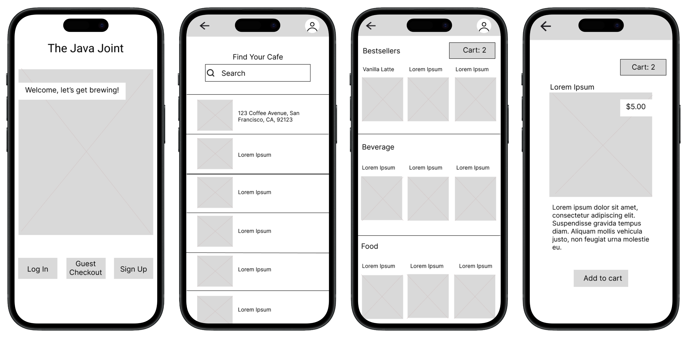

The Java Joint

Project Overview
A full iteration process from research to prototype was completed over the span of several weeks with the goal of developing a mobile application ordering platform for a fictitious coffee company, The Java Joint.
- Timeline: 6 weeks
- Role: UX Researcher & Product Designer
- Tools: Google Workspace, Canva, Figma, Miro
Project Goals
- Mobile ordering is used in quickly moving, real-world contexts, and even small usability issues can cause friction, abandonment, or loss of trust.
- Objective: Identify high-impact usability barriers and design a simplified, intuitive ordering flow that maximizes task success and user confidence to create a frictionless mobile ordering experience.
User Research
Competitive Analysis
The Java Joint operates in the premium “third-wave” coffee space alongside:
- Blue Bottle: Minimalist, premium, sustainability-focused
- Stumptown: Direct-trade pioneer with bold and unique brand identity
- Intelligentsia: High-prestige, coffee-expert positioning
- La Colombe: Broader appeal with modern RTD innovation
These brands serve educated, high-income, urban customers who value specialty coffee, sustainability, and quality.
The Java Joint needed a digital experience that matched the high standards of larger comparable coffee companies, without adding complexity.
Target Users
Demographics
- Urban professionals
- High income, highly educated
- Frequent coffee buyers
Psychographics
- Value sustainability and traceability
- Willing to pay for premium quality
- Expect efficiency in daily routines
Non-coffee drinkers were screened out.
Usability Testing
Objectives
Identify features that make mobile ordering:
- Efficient vs. inefficient
- Easy vs. confusing
- Attractive and confidence-building
Methods
- Moderated remote usability testing
- Think-aloud protocol
- 6 participants
- Real-time observation + follow-up probing
Tasks
Participants were asked to:
- Create an account
- Find the closest café
- Add, remove, and modify items in an order
- Proceed to checkout
Metrics
Primary
- Task completion rate
- Error rate
Secondary
- Time on task
- Self-reported satisfaction
Research Synthesis
- Reviewed recordings + moderator notes
- Identified recurring breakdowns and patterns
- Grouped behaviors across participants
- Prioritized issues using a severity framework
Key Findings
- Account requirement unclear: Users added items before realizing login was required.
- Store selection unintuitive: Users struggled to confidently identify the closest location.
- Navigation friction: Difficulty moving backward between pages increased cognitive load and time on task.
Design
Based on findings, the app was redesigned to:
- Introduce a clear welcome screen (Login / Sign Up / Guest Checkout)
- Implement a more intuitive store finder experience
- Add persistent back navigation and clearer return paths
- Simplify instructions and reduce cognitive friction throughout the flow
Lo-Fi Wireframe

Hi-Fi Prototype

Final Product
View Final PrototypeConclusions
At first glance, the Blue Bottle mobile app seemed intentionally designed, with a minimal aesthetic that fits the company’s brand, and features that align with user tasks for mobile ordering.
However, conducting user research led to the understanding that even well-designed apps can be improved. It also highlighted the aspects of the mobile ordering experience that draw users in, like clear organization, simple font and imagery, and easy navigation across pages.
The final prototypes for The Java Joint app reflect the needs and wants of users ordering coffee online, allowing them to utilize guest checkout, and navigate the task flow without frustration.
Due to the nature of this as an individual academic project, I did not have all resources at my disposal. If I had more time available, I would have conducted a usability evaluation on The Java Joint’s app design itself and make design adjustments based on that data, with further iterations as needed.